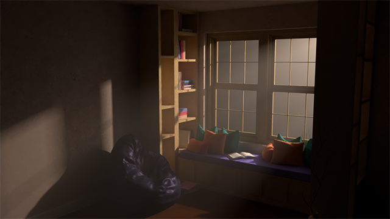

DÍDAC BOSCH
PORTAFOLIO
¿QUIÉN SOY?
Como ya habrás leído más arriba soy Dídac Bosch, un alumno que justo acaba de terminar el primer curso en un Grado Superior de Animaciones 3D, Juegos y Entornos interactivos.
Poco a poco mis profesores me han ido abriendo este gigantesco mundo para que empezase a trastearlo tanto como pudiera y tengo que decir que sigo en ese proceso, buscando encararme hacia una raíz de las centenares que hay para empezar a
dedicarme profesionalmente.
Me encanta el diseño, siempre busco nuevas y mejores formas para dibujar las ideas que tengo en mi mente.
He disfrutado trasteando y descubriendo el gigantesco mundo del CSS, aprendido las bases de la animación 2D y 3D, descubierto a modelar y seguidamente hacer el rig de un personaje u objeto, y como olvidarme del casi infinito mundo de la programación con JavaScript o C#.
¿Qué será lo siguiente?
TEXTURAS
Desde que vi el estilo “Low Poly” o minimalista en varios juegos, me enamoró, así que cuando la profesora
nos pidió que hicieramos 8 texturas con el Adobe Photoshop, no dudé ni dos segundos en ponerme a buscar ejemplos
en Internet para aprender a dibujar texturas con ese estilo minimalista.
ILUMINACIÓN
La iluminación la he trabajado en su gran mayoría con Blender y su motor "Cycles". En este caso, a partir de un ejemplo,
teníamos que llegar a conseguir una iluminación lo más realista posible.
Tenía que intentar simular el trato de la luz con las copas de cristal con un HDRI a su alrededor, para darles un reflejo 360º y una iluminación general a la escena.
La idea era sencilla: Simular los rayos de luz entrando por una ventana. Rápidamente se me ocurrió hacer una escena nocturna en donde la supuesta luz de una farola de la calle.
Este ejercicio fue uno en el que teníamos total libertad. Así que decidí simular una foto simple que vi en internet para intentar fijarme en los pequeños detalles de la escena.
ELEMENTOS INTERACTIVOS
Dentro del mundo HTML/CSS/JS, había llegado el momento de trabajar con audio y vídeo. El objetivo era hacer un
reproductor HTML5 propio dentro de una página que tuviera sentido. Así que intenté recrear Youtube a mi gusto y llegué a este resultado.
Todo está hecho con HTML, CSS y JavaScript, aunque lo que estás viendo sea una captura de ello.
VIDEOJUEGOS
Entramos al mundillo de la programación por las cómodas puertas del programa "Processing". Práctica tras práctica ibamos
mejorando hasta llegar al punto de tener un par de juegos presentables hechos de código puro empezándolos desde zero. En estos dos casos,
trabajé con otro compañero para realizarlos.
MODELAJE
Son mis dos primeros modelos. Sé que hay un gran camino por delante, pero sinceramente el modelaje me llama muchísimo la
atención. Aún tengo que encontrar ese programa en el que me encuentre cómodo, por ahora estos dos modelos están hechos con el Maya
de Autodesk.
©2018, Dídac Bosch
didacbb@gmail.com